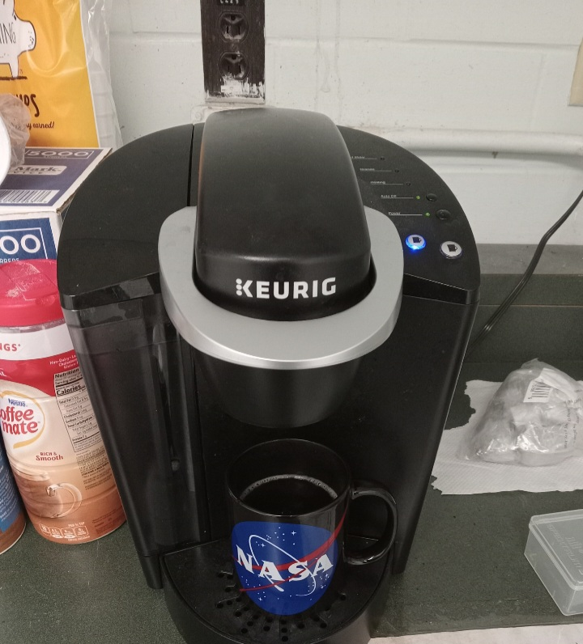

This page is about hacking computers
that are less powerful than Turing machines.
I noticed that two Keurig machines have
the same problem when you refill the reservoir.
Many people have this specific type of Keurig.

After refilling the reservoir
and placing the reservoir into position,
there is a sound like gears are not
making a complete connection as the
machine pulls water into the heating tank.
When the machine makes this unpleasant sound
the water does not fill the heat tank.
The hack I discovered is that if you remove the
reservoir after the machine starts pulling
water (when you hear the unpleasant sound)
and then place the reservoir back into
position, then the gears will not grind
and the heat tank will be able to pull the water.